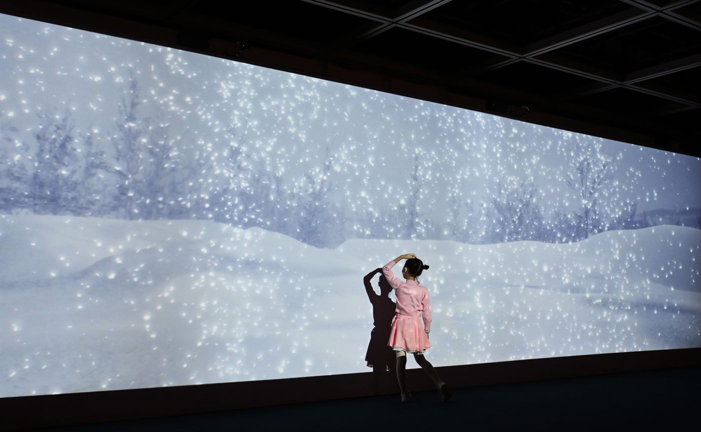
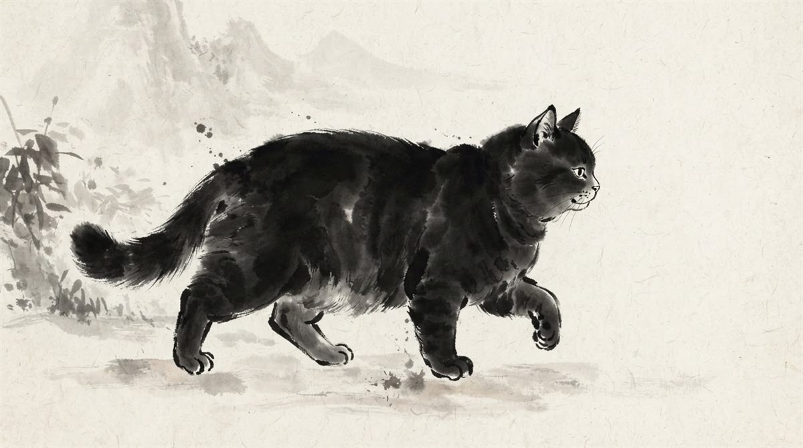
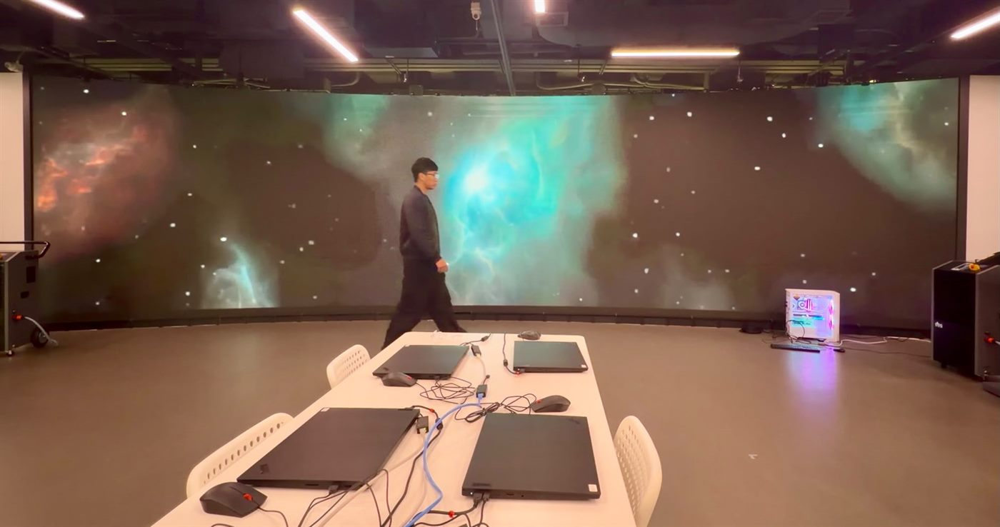
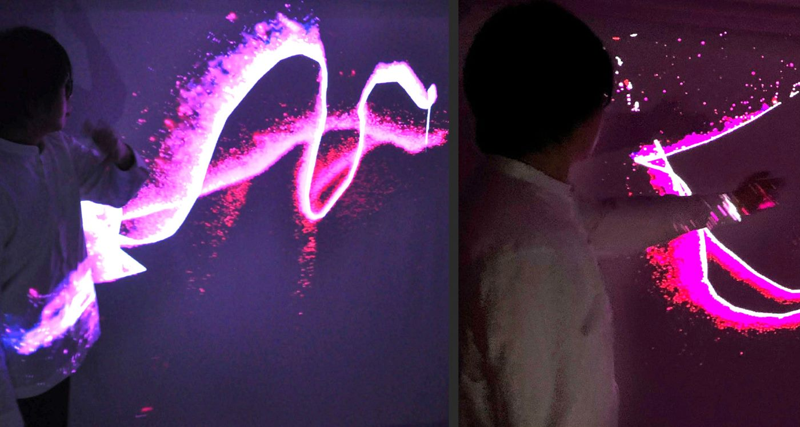
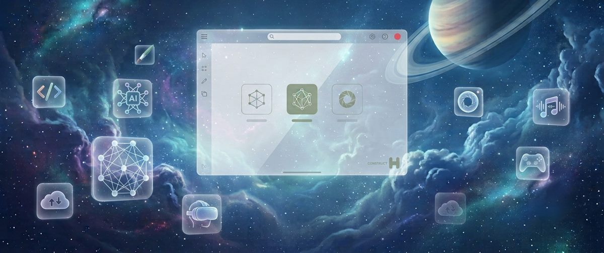
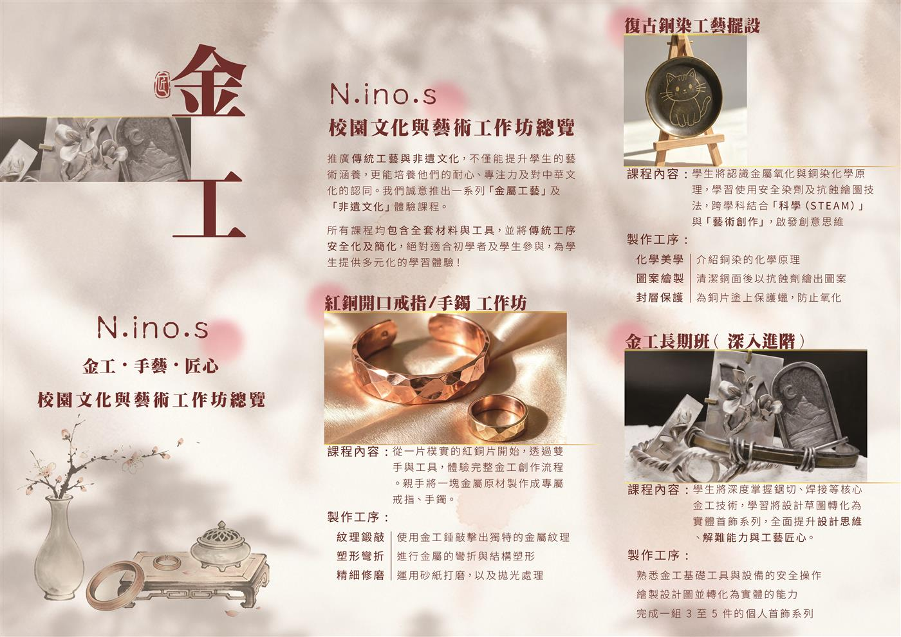
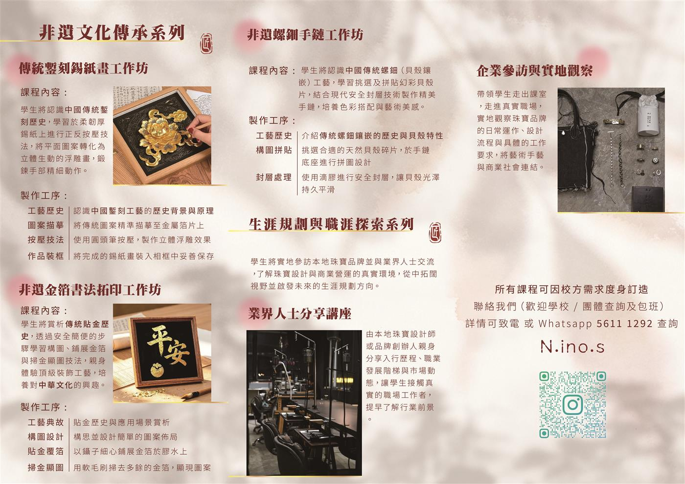
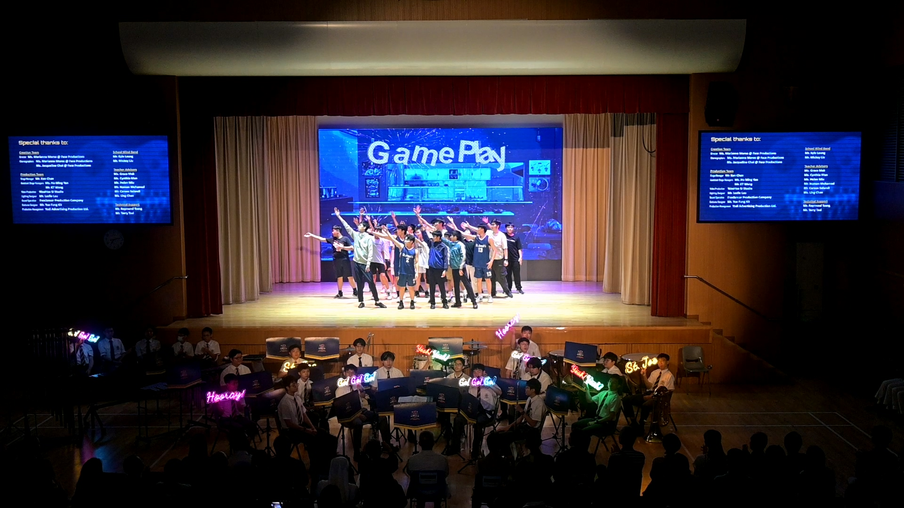
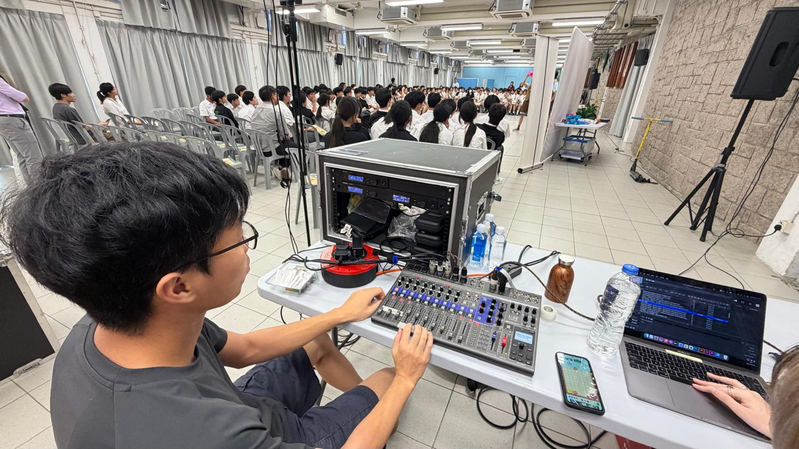
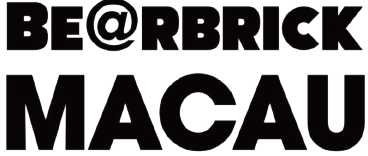

專為香港學校及大專院校設計。結合專業網頁互動、即時視覺演算與生成式 AI，引導學生親手創作出沉浸式藝術作品，對接未來AI與藝術融合的趨勢。
瀏覽課程及工作坊Waahaa SJ Studio專營STEAM與ART TECH及視覺設計，教學經驗豐富，曾獲邀於 IVE 及其他機構主辦ART TECH及AI工作坊。我們提供「常規課程與單元體驗」一站式 Art-Tech 方案，結合雲端平台，引導學生掌握 AI 與互動藝術創意，擴闊未來視野。
結合 STEAM 元素，靈活配合學校課外活動、彈性時間學習
「不用寫代碼，用邏輯與美感操控光影」
建議人數：20 - 35 人
每堂時長：1 - 1.5 小時
課程內容：使用業界即時視覺軟體，教導學生使用「節點」代替繁瑣程式碼，探索 Art-Tech 的無限可行性。
課程重點：深度結合STEAM教育，引導學生將數字轉化為動態藝術，並融入傳統中華文化意象。
預期收穫：掌握即時互動藝術與 AI 軟件的實際應用，親手打造出屬於自己的沉浸式展覽。最後一堂將會為學生舉辦一個小型沉浸式展覽。

「掌控 AI，學會生成式創作」
建議人數：20 - 35 人
每堂時長：1 - 1.5 小時
課程內容：雲端平台運行，免卻學校電腦硬件配置限制。專注教授 AI 的工作流邏輯。
課程重點：學習精準度的提示詞（Prompts）與邏輯架構，並融合傳統美學與現代藝術（如水墨擴散、國潮視覺）
預期收穫：由淺入深，學會從純文字生成品質插畫，到親手製作出細緻流暢的動態 AI 動畫短片。

「單元 Art Tech 體驗：光與聲的即時派對」
建議人數：20 - 40 人
工作坊時長：1.5 小時 (單元體驗)
工作坊內容：單元體驗。專業導師團隊會攜帶完整互動器材親臨學校，搭建現場環境，讓學生即場體驗新媒體藝術。
工作坊重點：主打零基礎、高參與度。學生可進行現場實機操作，親身體會聲音、人體動作如何與現場光影畫面進行即時互動連動。
預期收穫：解構並認識 Art-Tech 的實際應用，啟發對Art-Tech與AI藝術、數碼設計與未來創意藝術的濃厚興趣。

「使用 Gemini 快速創作你的互動藝術」
建議人數：20 - 40 人
工作坊時長：1.5 小時 (單元體驗)
工作坊內容： 透過具趣味性的實驗與互動藝術，將深奧的互動藝術概念，使用 AI 轉化成學生能即學即用的創意思維工具。
工作坊重點：打破常規！證明 AI 不只是單純文字和圖像工具，學生更可以將 AI 與視覺硬體聯動，好玩、易上手且充滿成就感。
預期收穫：學會與生成式 AI 進行深度精準對話的思考方式；全面啟發 AI 邏輯思維，將 AI 化為理想的工具。

「用 AI 當作最強工具，毋須基礎寫出專屬網頁」
建議人數：20 - 40 人
課程時長：1.5 - 2 小時
課程內容：教授學生如何利用大型語言模型（LLM）輔助編程，一步步引導 AI 寫出 HTML、CSS 與 JavaScript 程式碼。
課程重點：著重於「指令工程（Prompt Engineering）」與邏輯拆解，引導學生將天馬行空的創意轉化為清晰的網頁架構與動態互動。
預期收穫：學生可以即堂架構到一個網站，避免繁複的coding，在 AI 協助下架設出個人作品或動態特效網頁，並能部署至 GitHub Pages 即時分享。

「從一片紅銅開始，親手打造專屬首飾」
建議人數：10 - 30 人
課程時長：1 - 1.5 小時
課程內容：從一片樸實的紅銅片開始，透過雙手與工具，體驗完整金工創作流程，親手將金屬原材料製作成專屬戒指、手鐲。
製作工序：紋理鍛敲 → 塑形彎折 → 精細修磨
預期收穫：完成一件專屬的金屬首飾，體驗由原材料到成品的完整金工創作流程。

「認識金屬的化學之美，科學與藝術的結合」
建議人數：10 - 30 人
課程時長：1 - 1.5 小時
課程內容：認識金屬氧化與銅染化學原理，學習使用安全染劑及抗蝕繪圖技法，跨學科結合「科學（STEAM）」與「藝術創作」，啟發創意思維。
製作工序：化學美學 → 圖案繪製 → 封層保護
預期收穫：完成一件復古銅染工藝擺設，同時理解金屬化學原理與藝術創作的結合。
「深入金工核心技術，完成個人首飾系列」
建議人數：10 - 30 人
課程時長：1 - 1.5 小時
課程內容：深度掌握鋸切、焊接等核心金工技術，學習將設計草圖轉化為實體首飾系列，全面提升設計思維、解難能力與工藝匠心。
製作工序：基礎工具與安全 → 設計轉化 → 完成個人首飾系列
預期收穫：完成一組 3 至 5 件的個人首飾系列，掌握完整金工創作流程。
「在錫紙上鍛敲出立體浮雕畫」
建議人數：10 - 30 人
課程時長：1 - 1.5 小時
課程內容：認識中國傳統錾刻歷史，學習於柔韌厚錫紙上進行正反按壓技法，將平面圖案轉化為立體生動的浮雕畫，鍛鍊手部精細動作。
製作工序：工藝歷史 → 圖案描摹 → 按壓技法 → 作品裝框
預期收穫：完成一幅裝裱的立體浮雕錫紙畫，認識中國傳統錾刻工藝。

「親身體驗貼金工藝，顯現書法之美」
建議人數：10 - 30 人
課程時長：1 - 1.5 小時
課程內容：賞析傳統貼金歷史，透過安全簡便的步驟學習構圖、鋪展金箔與掃金顯圖技法，親身體驗頂級裝飾工藝，培養對中華文化的興趣。
製作工序：工藝典故 → 構圖設計 → 貼金覆箔 → 掃金顯圖
預期收穫：完成一幅金箔書法拓印作品，認識中國貼金工藝與書法之美。
「以幻彩貝殼拼貼出精美手鏈」
建議人數：10 - 30 人
課程時長：1 - 1.5 小時
課程內容：認識中國傳統螺鈿（貝殼鑲嵌）工藝，學習挑選及拼貼幻彩貝殼片，結合現代安全封層技術製作精美手鏈，培養色彩搭配與藝術美感。
製作工序：工藝歷史 → 構圖拼貼 → 封層處理
預期收穫：完成一條精美螺鈿手鏈，認識傳統貝殼鑲嵌工藝與色彩美學。
「走進珠寶行業，啟發生涯規劃」
建議人數：10 - 30 人
課程時長：1 - 1.5 小時
課程內容：學生將實地參訪本地珠寶品牌並與業界人士交流，了解珠寶設計與商業營運的真實環境，從中拓闊視野並啟發未來的生涯規劃方向。
課程組成：企業參訪與實地觀察 + 業界人士分享講座
預期收穫：接觸真實職場工作者，提早了解珠寶行業前景，啟發生涯規劃方向。
此分類課程籌備中
如有興趣，歡迎 聯絡我們 查詢最新課程安排


歡迎學校、機構、團體聯絡。我們將儘速與 貴校/公司聯繫並提供詳細企劃書。
